01
Sélection des créatures
J'ai d'abord sélectionné cinq créatures issues de l'univers de Guild Wars 2 afin de définir les sujets principaux du trailer.
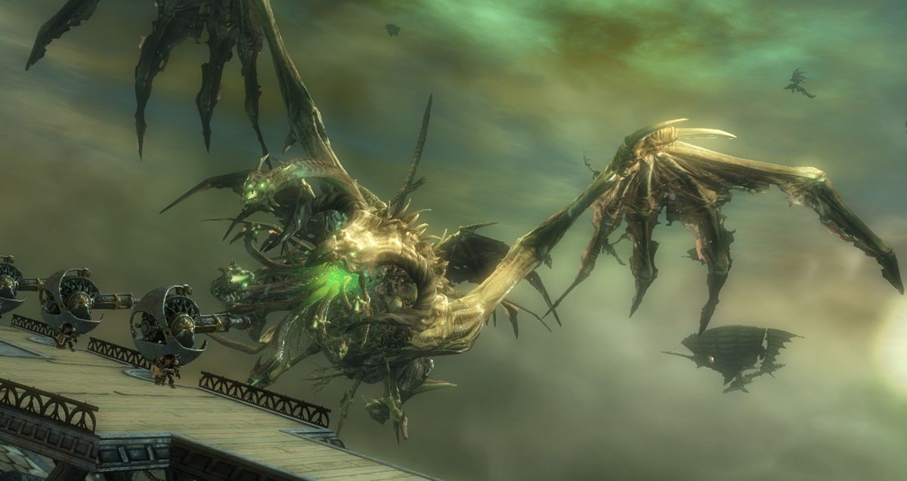
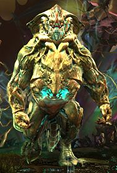
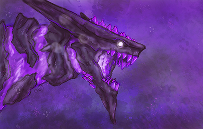
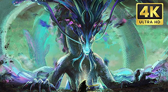
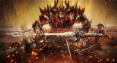
AC33.03
Projet Motion Design
J'ai d'abord sélectionné cinq créatures issues de l'univers de Guild Wars 2 afin de définir les sujets principaux du trailer.





J'ai ensuite conçu un moodboard permettant de définir l'univers visuel du trailer, notamment les couleurs, les typographies et les références graphiques.
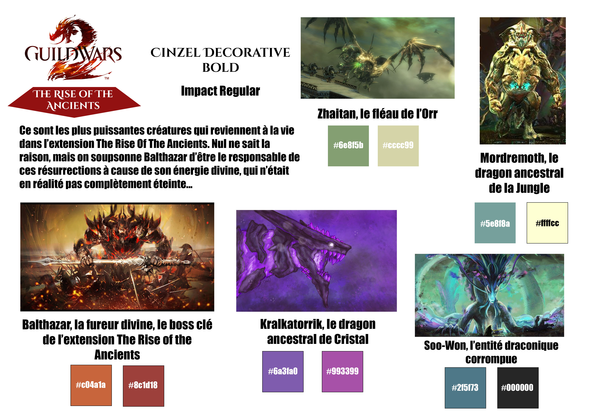
J'ai créé plusieurs références visuelles à l'aide de l'intelligence artificielle afin d'imaginer les mascottes et les éléments graphiques du trailer avant leur reproduction sur Illustrator.
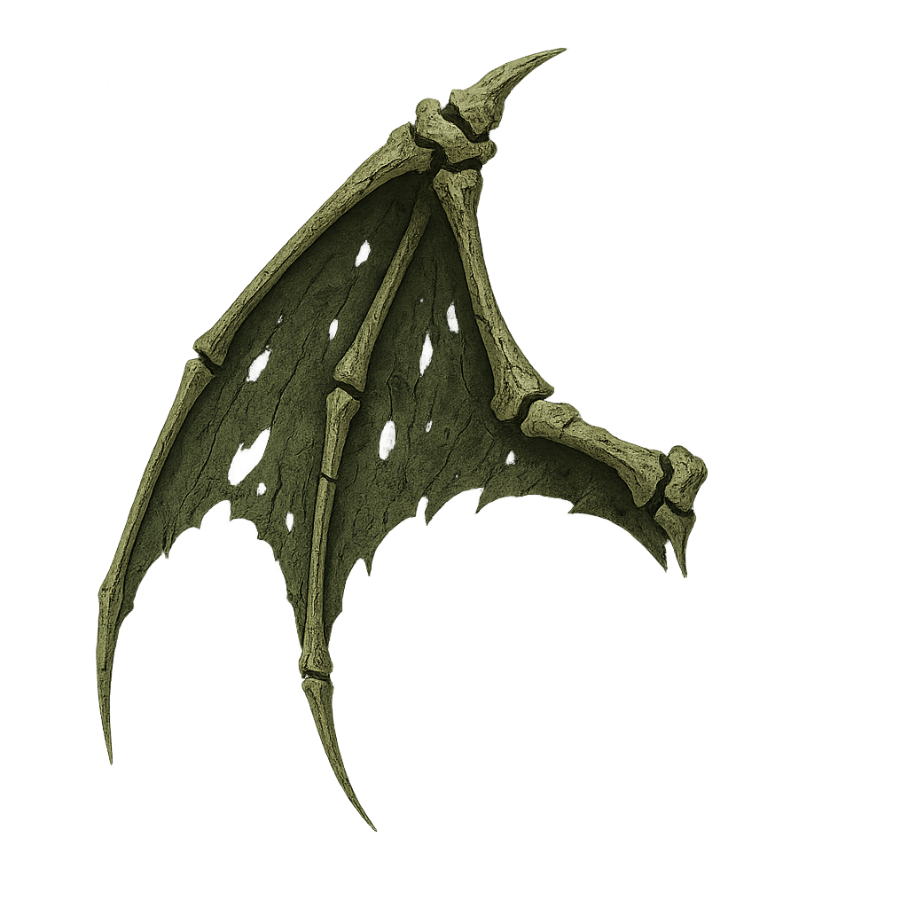
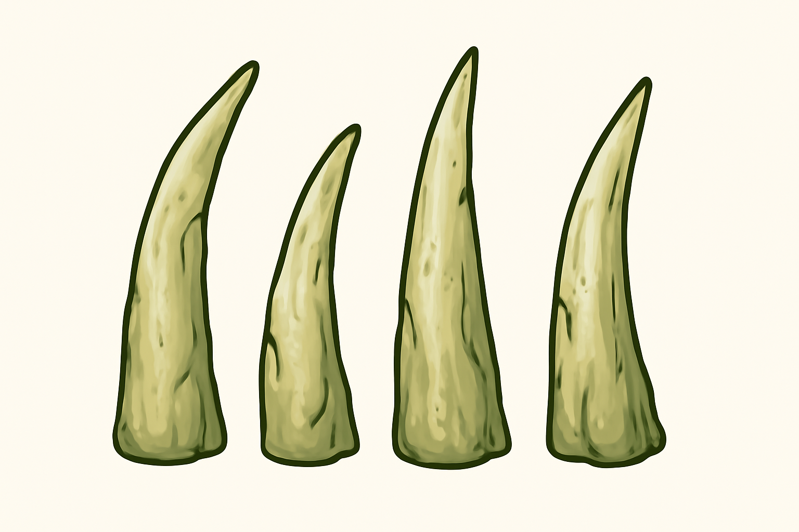
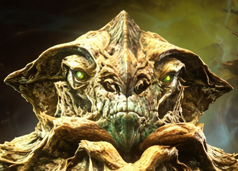
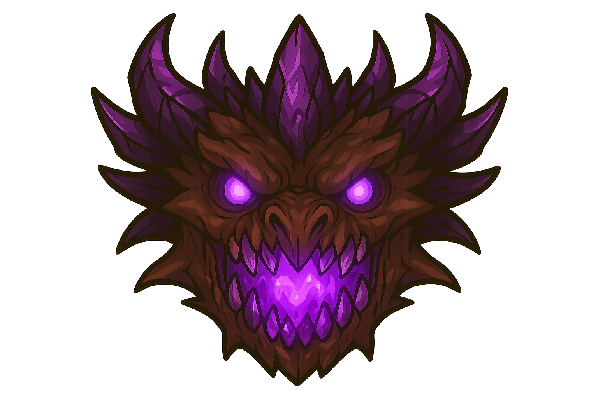
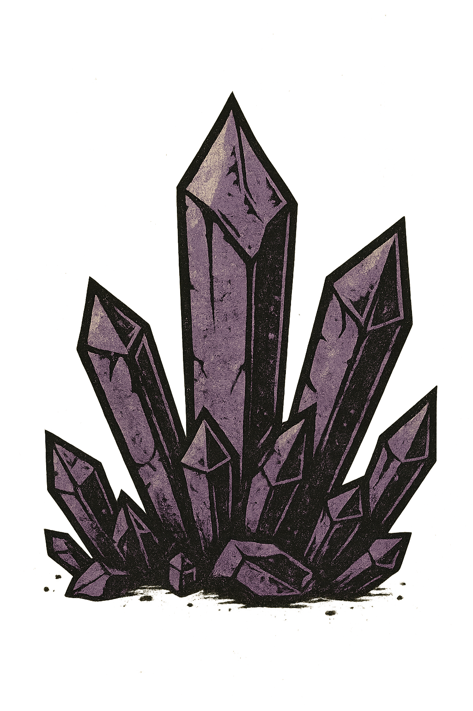
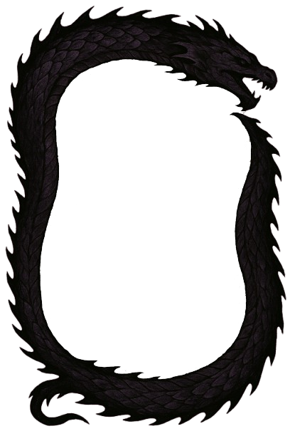
J'ai reproduit et adapté les éléments graphiques sur Illustrator en les séparant en plusieurs parties afin de préparer leur animation dans After Effects. Chaque élément a été reconstruit manuellement dans un style personnel tout en respectant l'univers visuel défini lors de la phase de recherche.
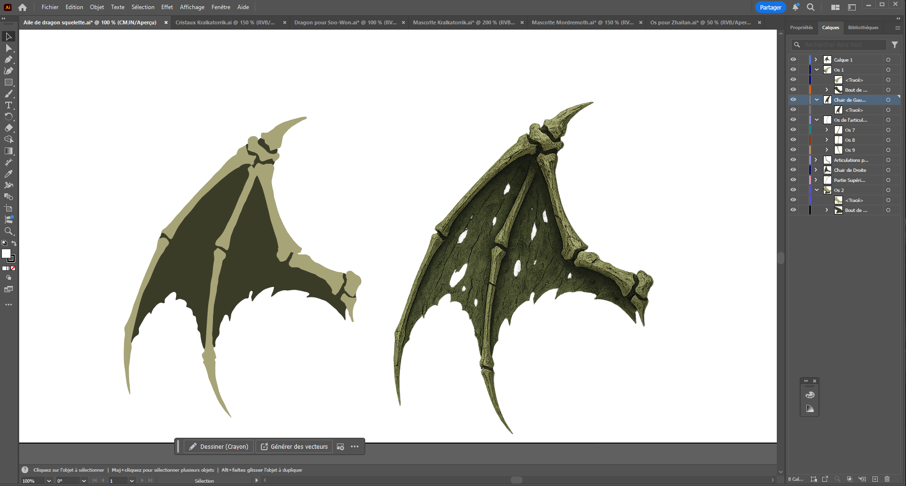
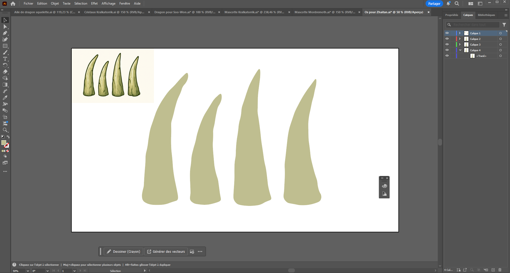
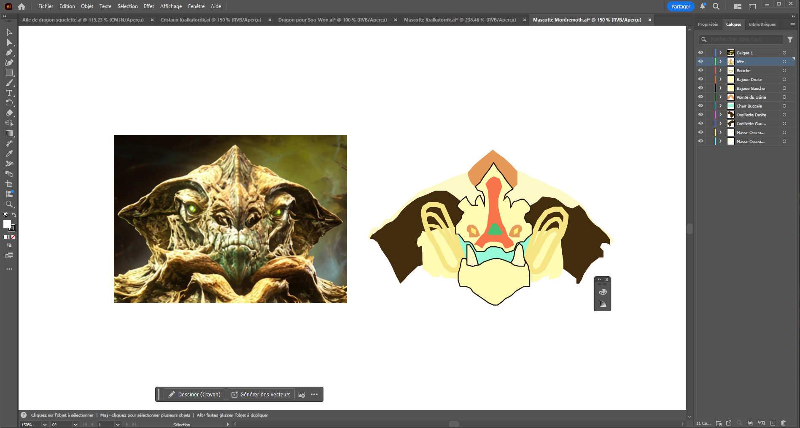
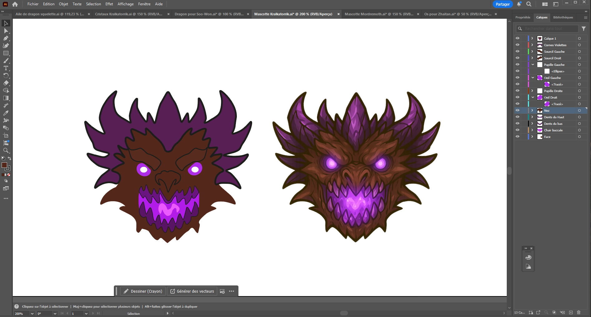
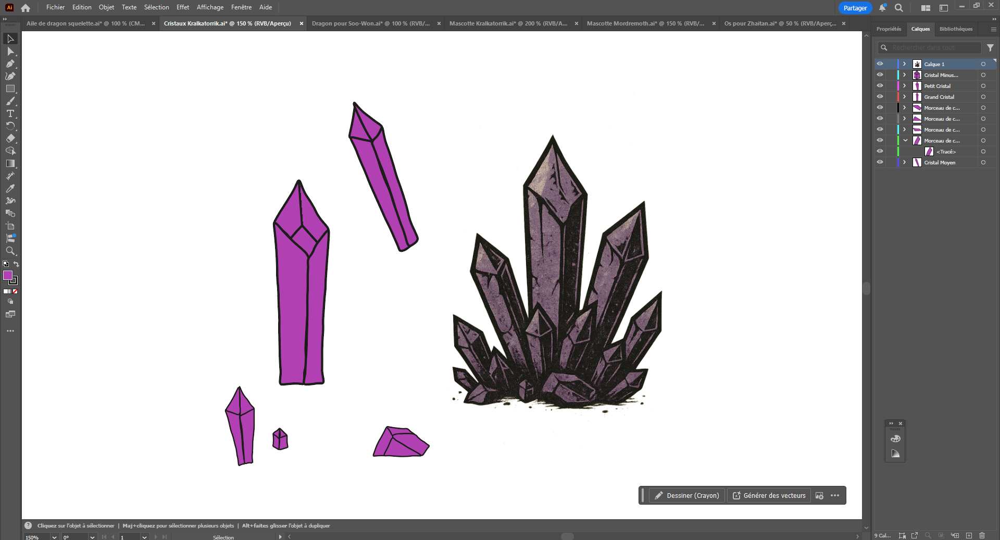
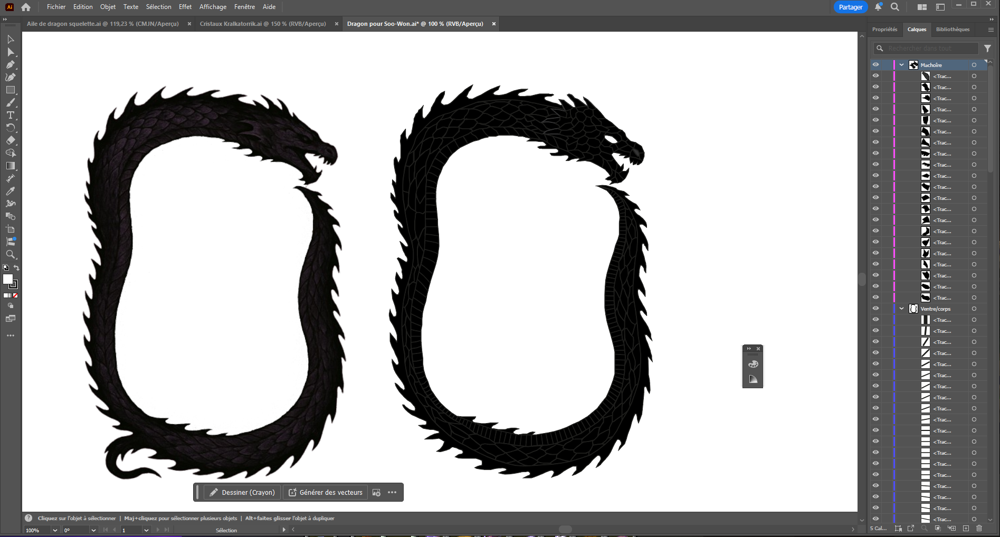
Cliquez sur une image pour voir les détails.
J'ai réalisé un premier montage vidéo cohérent et dynamique à partir de courts extraits des cinq créatures choisies avec un début de plusieurs idées de motion design.
Première version du montage vidéo intégrant les extraits des cinq créatures ainsi que les premières intentions de motion design.
Après l'intégration des éléments graphiques dans After Effects, j'ai poursuivi la réalisation du motion design en animant les mascottes, les décors et les différents éléments visuels du projet. J'ai également intégré la typographie définie lors de la phase de recherche ainsi que les titres permettant d'identifier les différentes créatures présentées dans la bande-annonce.
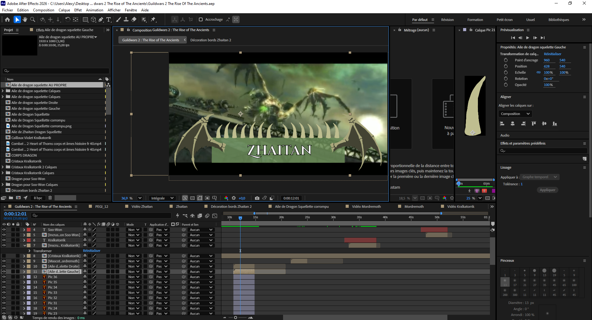
Capture d'écran de la phase de finalisation du motion design dans After Effects. Les éléments graphiques créés sur Illustrator ont été intégrés puis animés afin d'enrichir les séquences vidéo et renforcer l'identité visuelle du trailer.
J'ai sélectionné et intégré les éléments sonores sur Audition afin de produire une bande-annonce cohérente et finalisée.
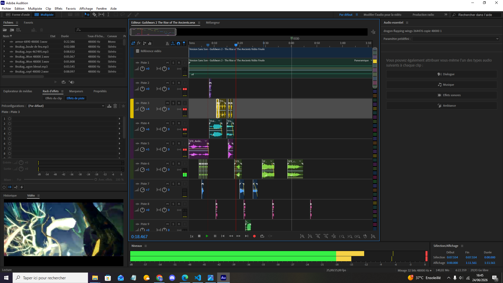
Capture d'écran du travail réalisé sur Adobe Audition. Les différents effets sonores, musiques et transitions audio ont été sélectionnés, ajustés puis synchronisés avec les séquences visuelles afin de produire une bande-annonce cohérente et immersive.
Cliquez sur l'image pour voir les détails.
Cette bande-annonce constitue l'aboutissement du projet. Elle rassemble l'ensemble des étapes présentées précédemment : recherche visuelle, création graphique, animation, montage vidéo et habillage sonore.
Voir la vidéo finale